Decisions happen on the phone; viewing lands on the living-room TV.决策在手机上发生，观看落在客厅大屏。
A multi-device household: the family watches live and on-demand (VOD) on the TV, while members keep watching on their phones during commutes or before bed. With kids at home, identity and content boundaries matter. Search, comparison, subscription, and payment tend to happen on mobile, while the final viewing lands on the shared screen.一个多设备家庭：一家人在客厅用 TV 看直播和点播（VOD），成员各自在通勤、睡前用手机接着看；家里有孩子，需要清晰的身份与内容边界。搜索、比较、订阅、支付多发生在手机上，而最终观看落在客厅共享大屏。
That gap turned continuation, conversion, and household control into cross-device problems the product had to solve as one system.正是这个落差，让连续观看、付费转化和家庭管理都成了跨端问题——产品要把它们当作一个系统来解决。
Three strategies set the targets for the work.三条策略，定下设计要达成的目标。
All three serve one goal — make a two-screen product feel like one continuous viewing experience.三条策略服务同一个目标——让双屏产品用起来像一段连续的观看。
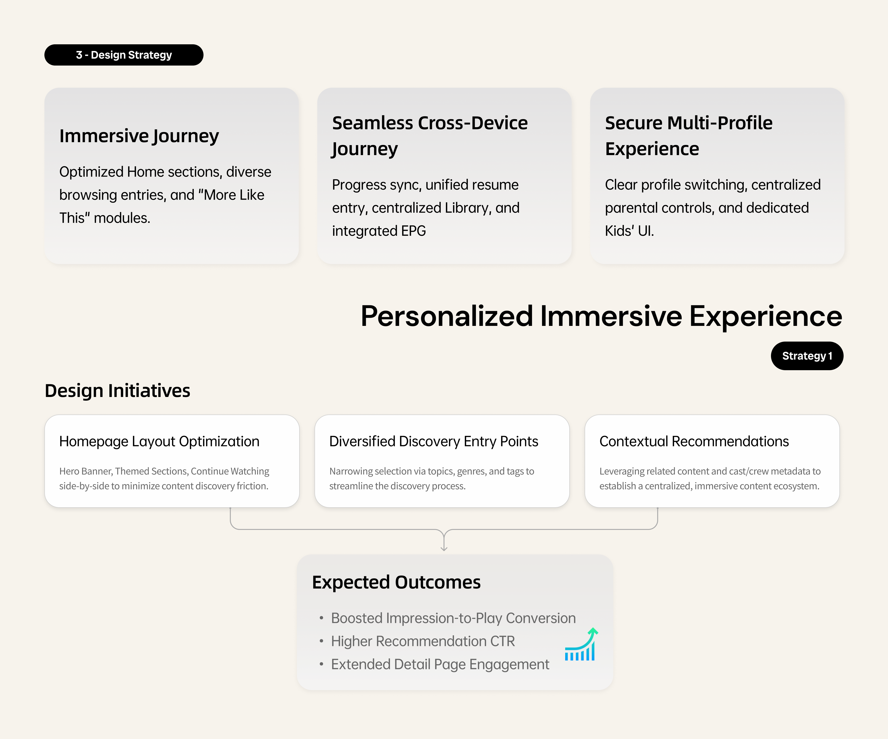
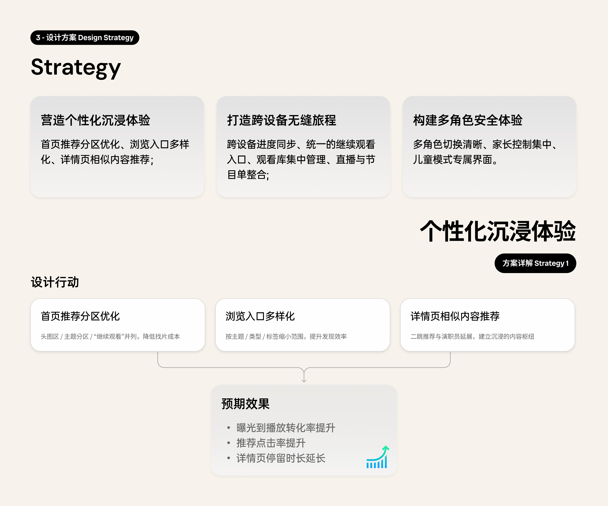
One journey across two screens.一条贯穿两块屏的观看旅程。
Watch live, lean back.客厅看直播，lean-back。
The shared TV owns immersive, lean-back viewing.共享大屏负责沉浸、lean-back 观看。
Search, compare, subscribe, pay.搜索、比较、订阅、支付。
The phone carries input-heavy and private tasks.手机承接输入重、涉隐私的任务。
Resume on any screen.任意屏接着看。
Progress and entitlement follow the user across ends.进度与权益跨端跟随用户。
The product treats this path as one system—progress, entitlement, and entry points connect across both ends. Each screen that follows is a node on this journey.产品把这条链路当作一个系统来设计——进度、权益、入口在两端打通。后面的每一屏，都是这条旅程上的一个节点。
Live viewing is built around interest and habit.直播体验围绕兴趣与习惯来组织。
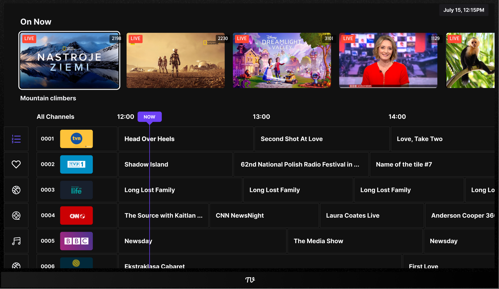
Turn live attention into the bridge to on-demand.把直播注意力，变成通往点播的桥。
Live viewing usually ends in drop-off, yet the project's core goal was to channel live traffic toward VOD and subscription.直播看完往往就流失；而项目的核心目标，是把直播流量引向点播与订阅。
While a user is watching or switching live channels, attention is highest and friction lowest — the best moment to bridge into VOD. The hard part is where and how to surface it without interrupting the live stream itself.用户正在观看或切换直播时，注意力最高、阻力最低，是承接点播的最佳时机；难点在于"在哪露出、怎么露出"，才不打断直播本身。
On the live player, "similar content" works as a low-friction bridge; on the on-demand detail page, content context, related recommendations, and trial / rent / buy sit in one place, so users can judge value before entering the commercial path.在直播播放页提供"相似内容"作为低阻力桥接；进入点播详情页时，把内容语境、相似推荐与试用 / 租 / 买放在一处，让用户在进入商业路径前先判断价值。
The path from live to VOD was connected; after launch, VOD watch time trended upward.打通了从直播到点播的承接路径，上线后点播观看时长呈上升趋势。
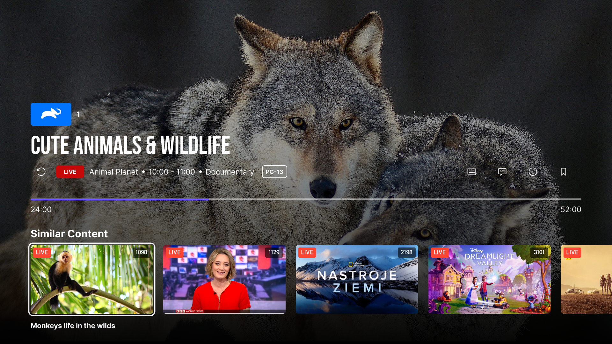
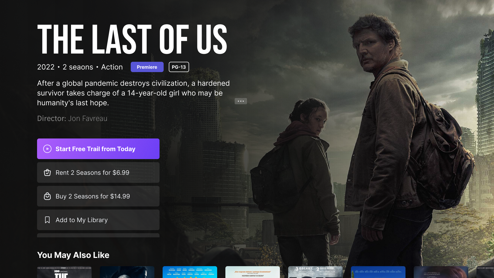
A subscription users can compare and commit to.让订阅清晰可比，用户能放心决定。
The subscription path runs across both screens: see the offer, choose a plan, and the entitlement is clear right after.订阅路径贯穿两块屏：先看到入口，再选套餐，订阅后权益一目了然。
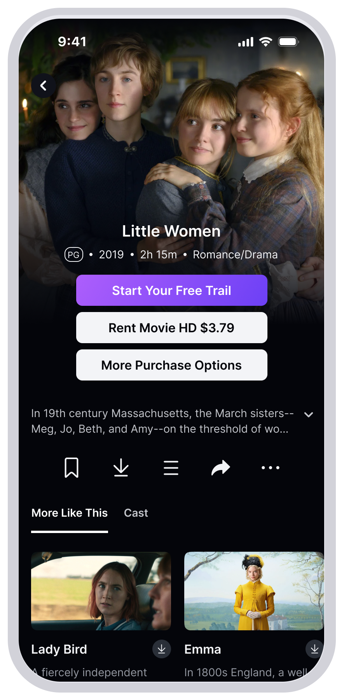
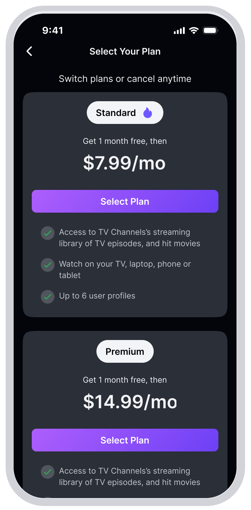
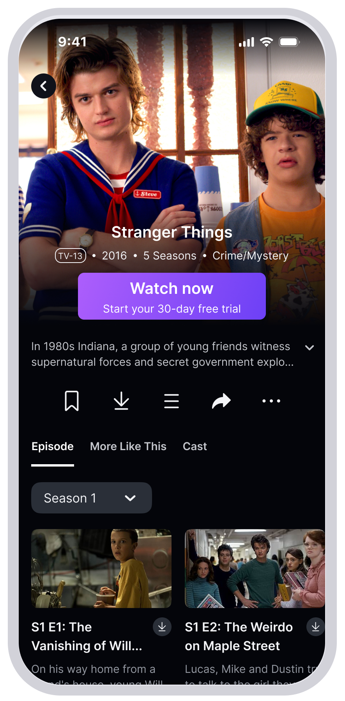
Keep payment off the shared living-room screen.把支付从共享大屏挪走。
Entering a credit card on a shared living-room TV carries privacy risk and the friction of remote-control input — a bottleneck for payment conversion.在客厅共享大屏上输入信用卡，既有隐私风险，又受遥控器输入成本拖累，是支付转化的卡点。
Entering payment on the TV versus handing off to the phone is a trade-off across conversion, privacy, the effort of entering details on the device, and launch feasibility.在 TV 端直接输入 vs 交接到手机，需要在转化、隐私、设备输入成本、上线可行性之间权衡。
Key information — title, plan, value — stays on the TV; payment and sensitive input move to the phone via a QR "continue on mobile"; closing the layer returns to the original detail page without losing context.关键信息（影片、套餐、价值）留在 TV；把支付与敏感输入通过二维码"在手机继续"完成；关闭弹层后仍回到原详情页，不丢失浏览上下文。
Remote-control input friction dropped and living-room privacy was protected; paid viewing showed early positive signals after launch.降低了遥控器输入摩擦、保护了客厅隐私，付费观看在上线后显示早期正向。
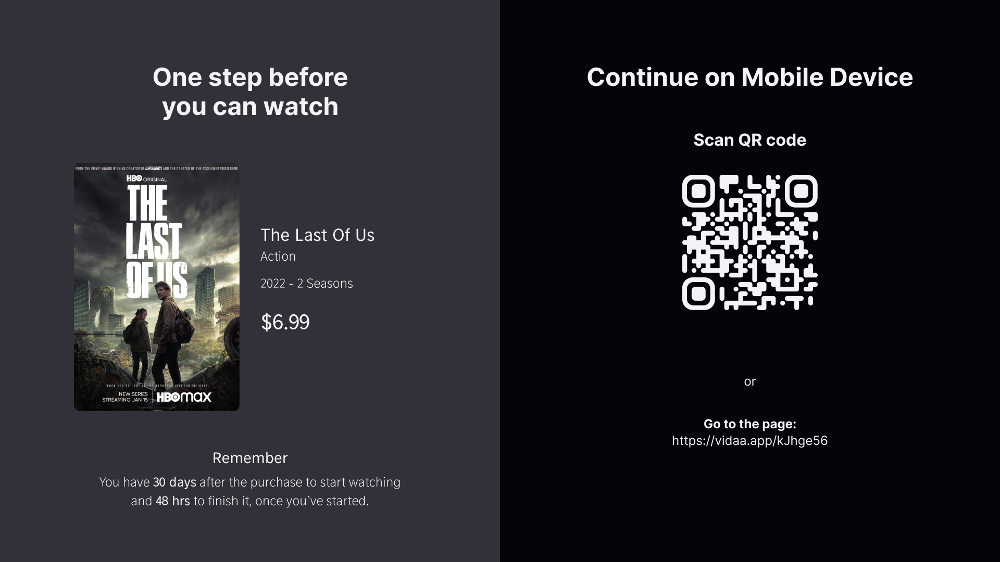
Different jobs, one design system.不同的任务，同一套设计系统。
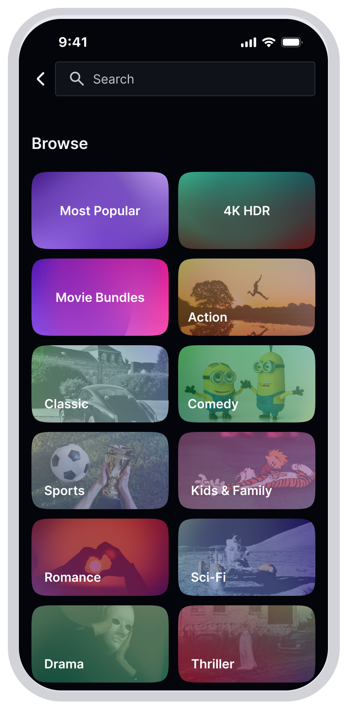
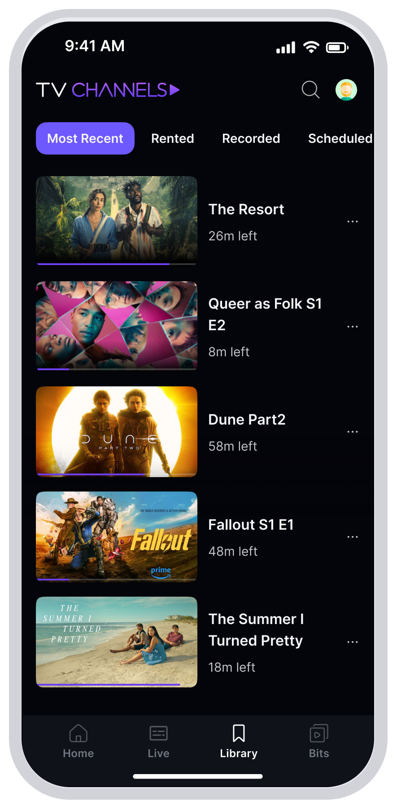
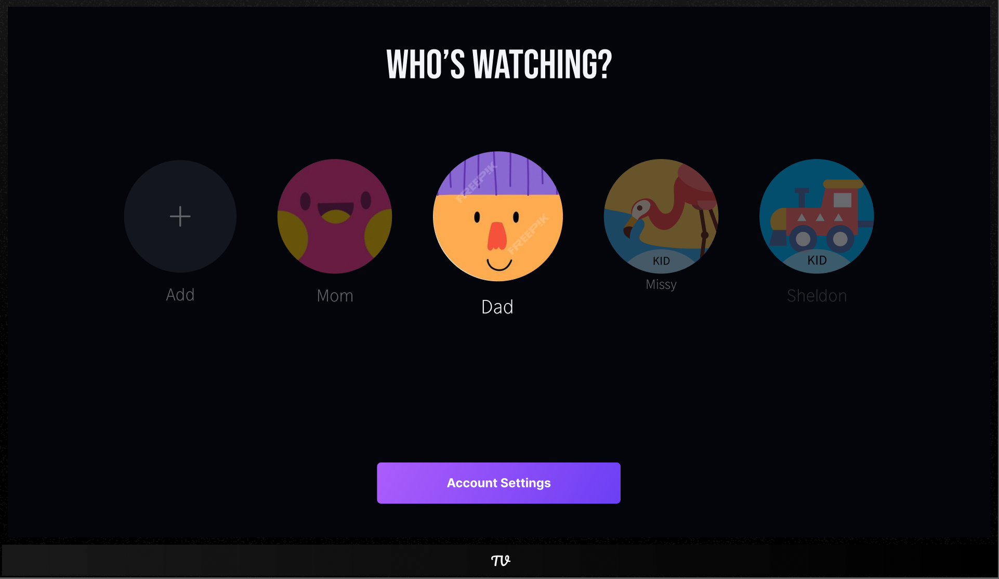
One cross-device loop, shipped.一条跨端闭环，已上线。
The project shipped one cross-device "watch + buy" loop across TV and mobile: live bridges into VOD, payment hands off to the phone, and progress and entitlement sync across both ends. After launch, VOD watch time trended upward and paid viewing showed early positive signals.这个项目交付了一条贯穿 TV 与手机的"观看 + 购买"闭环：直播承接点播、付费交接到手机、进度与权益跨端同步。上线后，点播观看时长呈上升趋势，付费观看显示早期正向信号。
To ship across multiple regions, I built the most feasible version of each flow first and deferred some ideal interactions — protecting a real launch over a perfect prototype.为了在多个区域真正上线，我先做出每条流程最可实现的版本、延后了部分理想交互——保住真实上线，而不是完美原型。
With production data, I'd validate this through live-to-VOD conversion, payment completion, cross-device continue-watching, and subscription retention.若有上线数据，我会用这些指标验证：直播→点播转化、付费完成率、跨端继续观看、订阅留存。